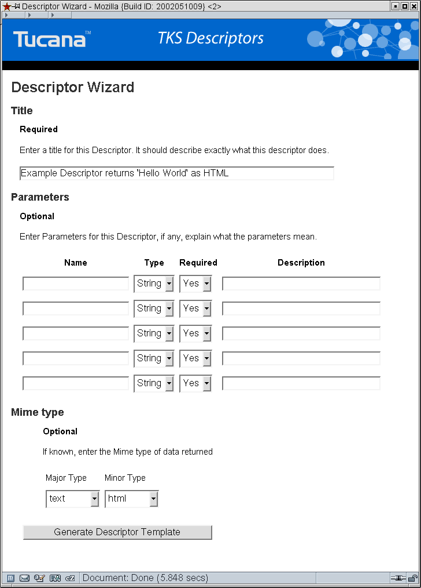
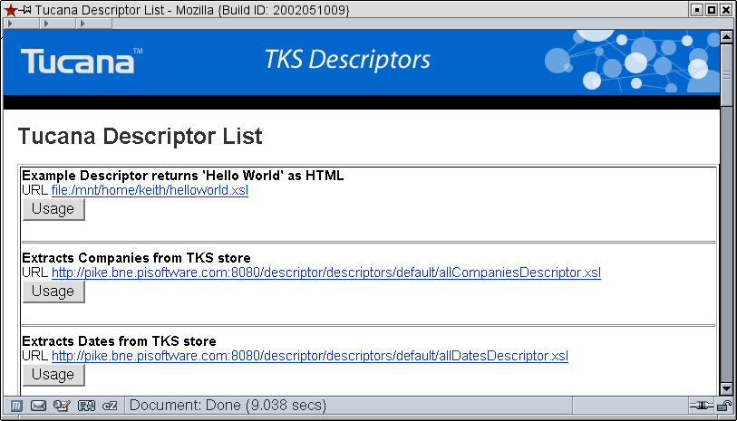
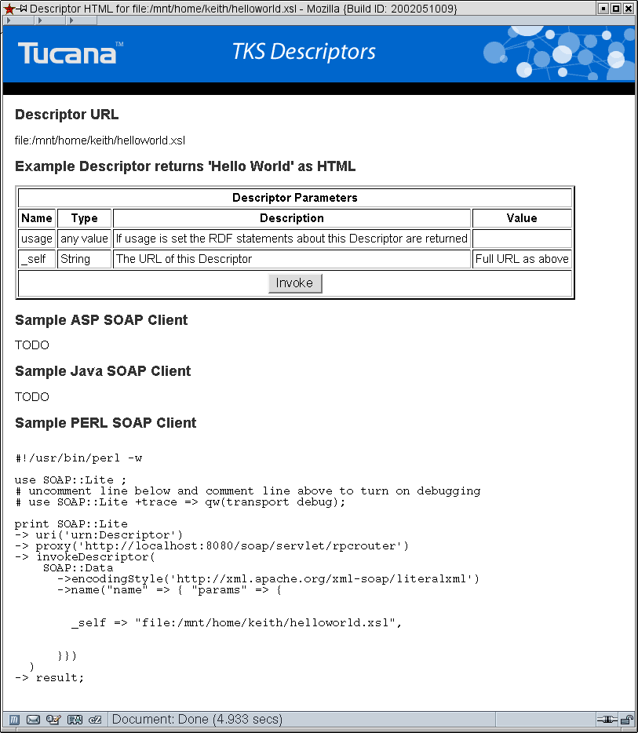
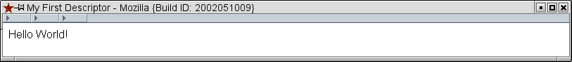

Mulgara Descriptor Hello World Tutorial
In this tutorial we will to do the following:- Create a Descriptor using the Descriptor Wizard
- Add logic to output 'Hello World' when the Descriptor is invoked
- Deploy the descriptor into Mulgara
- Invoke the Descriptor
Start the Descriptor Wizard
The Descriptor Wizard is always available from the /descriptor directory in a running Mulgara. Click here to open the main Descriptor page. Invoke the Descriptor Wizard which is the first task available in the Descriptor Tasks area.This single page form is all that is needed to create new descriptors. Note that the wizard only creates a template, the developer must edit the template to add logic such as Mulgara queries and/or call other descriptors to do anything useful.
Step 1 - Entering a Title
Enter a descriptive title that specifies what the descriptor does. Include what types of data it works on such as dates, people, VCards etc. The reason for entering a good title becomes apparent when large amounts of descriptors are in Mulgara. Developers browsing for a descriptor to perform some action will appreciate a good title. Examples of good titles include:- Extracts Titles of Documents as XML using a specified URL.
- Returns a HTML table with 2 columns specifing the first and last names of all people mentioned in a Document matching a specified URL.
- Returns an XML document showing all Companies mentioned in documents which also contain a specfiied Date range.
For this example enter a title such as:
Example Descriptor returns 'Hello World' as HTML.
Step 2 - Entering Parameters
This step may be skipped if the Descriptor does not require any parameters, however most descriptors do.Parameters are variables that are needed or affect how the descriptor is going to operate. For example if you want a list of all documents in a model on a Mulgara store you will probably want to specify the Mulgara model so that the descriptors works on different models and machines.
Since this is a very simple decriptor we do NOT need any parameters.
Note that there is always one implicit parameter, the <code>_self<code> parameter. This parameter must always be the URL of the descriptor for reasons that will become apparent as progress in the tutorial.
Step 3 - Mime Type
This step is optional but recommended, it should only be set to unknown if the descriptor itself cannot possibly know what kind of data it will return. Specfiying the mime type allows the Descriptor Servet, if used, to set the appropriate HTTP headers when returning data butmore importantly it allows other descriptors or apps to programmatically search descriptors looking fordescriptors which perform certain tasks. E.g. An application could ask a descriptor to find out everything about a certain person, the person descriptor may return a VCard which the application may not know how to handle or render so it may search for a descriptor that works with VCards and returns HTML.
For this example choose text/html
The wizard should now look similar to the screen shot below.

Step 4 - Generate the Descriptor Template
Once you have entered all required information (you will be returned to the form entry page if the data is incomplete) click on the 'Generate Descriptor Template' button.Step 5 - Save the Descriptor file
Your Browser should now be showing an XSL file, or it may ask you if you want to download it. In either case save the Descriptor file somewhere where you can edit it. Save it using a filename such as helloworld.xsl.Step 6 - Edit the helloworld.xsl Descripor file
Using your preferred text editor load the helloworld.xsl and go to the section marked up with a comment such as:<!-- INSERT DESCRIPTOR LOGIC HERE SUCH AS QUERIES, TRANSFORMATIONS AND CALLING OTHER DESCRIPTORS -->Simply change this to the following HTML:
<html>
<head>
<title>My First Descriptor</title>
</head>
<body>
Hello World!
</body>
</html>
Now save the file. You might want to check that the file is valid XML using a tool such as xmllint.
Step 7 - Deploy the Descriptor with Mulgara
To use a descriptor it must be deployed in a Mulgara database. Deployment is simple, all that is required is that the RDF embedded in the descriptor XSL file is loaded into a model in a Mulgara database.Start an iTQL client.
Check if the descriptor model already exists by querying for a list of models.
NOTE localhost should be replaced by the fully qualified hostname (FQHN) of your machine/server.
iTQL> select $model from <rmi://localhost/server1#> where $model <http://www.w3.org/1999/02/22-rdf-syntax-ns#type> <http://mulgara.org/mulgara#Model>;
NOTE if the #descriptors model does not exist then you should deploy the local descriptors which will create the descriptors model and load some useful descriptors. It is one of the tasks available from the descriptor management page.
create it with the following command.
iTQL> create <rmi://localhost/server1#descriptors>;
To deploy simply load the descriptor XSL file into this model:
iTQL> load <file:/home/joe/work/helloworld.xsl> into <rmi://localhost/server1#descriptors>;
NOTE the location of the descriptor MUST be readable to the Mulgara server.
If the there were no errors in the XSL then the Descriptor is now deployed and available for use, if there were errors check your XML for bad syntax such as unclosed tags. The Descriptor wizard generates correct XML and XSL.
Step 8 - Invoke the Descriptor
There are several tools available to list, create and invoke descriptors from the descriptor management page. Most of these tools, such as the Descriptor Wizard are themselves descriptors which are run by a Descriptor Servlet. From the descriptor entry page choose the task which lists all descriptors on this host. Incase you have not done so from step 7 you must deploy the local descriptors, choose the task that does so while preserving existing descriptors, otherwise the #descriptor model will be dropped and the deployment information lost.Once you have invoked the task that lists all available descriptors locate the hello world descriptor.

Click on the Usage button to see a screen similar to the one below.

Since we do not have any parameters (other than the implicit _self parameter and the usage parameter which returns the RDF of the XSL file) we can simply invoke the descriptor. Click on the invoke button.

You have now successfully developed, deployed and invoked a Mulgara Descriptor.
Conclusion
In this tutorial we did the following:
- Create a Descriptor using the Descriptor Wizard
- Add logic to output 'Hello World' when the Descriptor is invoked
- Deploy the descriptor into a Mulgara
- Invoke the Descriptor
Where to from here ?
The real power of descriptors is when you issue queries to Mulgara databases or call other descriptor from within your descriptor. Descriptors are fast, distributable and cross platform. They are capable of creating simple web apps such as the Descriptor Wizard. Look at some of the bundled descriptors for examples of sophisticated usage (you can click on the link to the source from the Descriptor List task from the descriptor management page).To learn how to perform a Mulgara query in a descriptor look at the Model List Tutorial.
To learn how to invoke one descriptor from another and perform a Mulgara query in a descriptor look at the VCard Tutorial.
See list of all tutorials